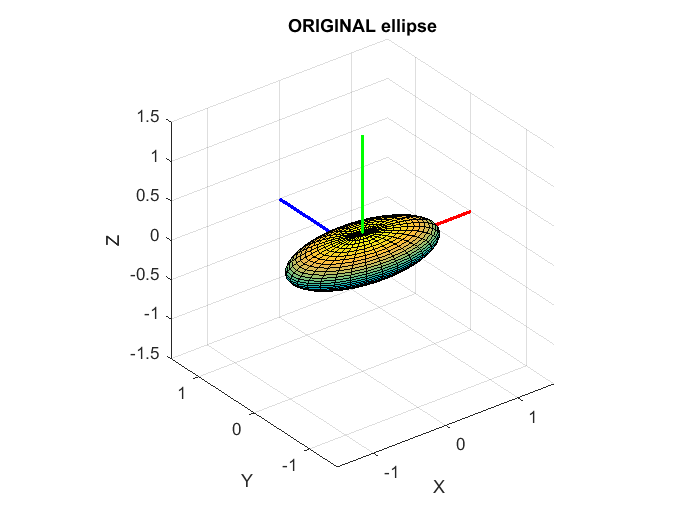
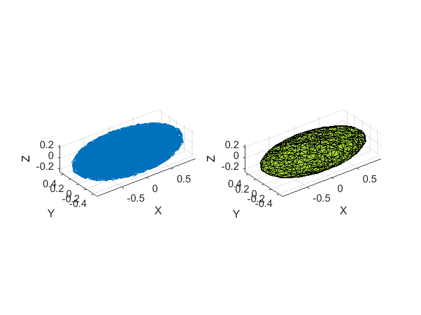
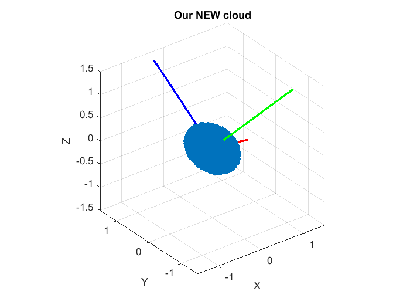
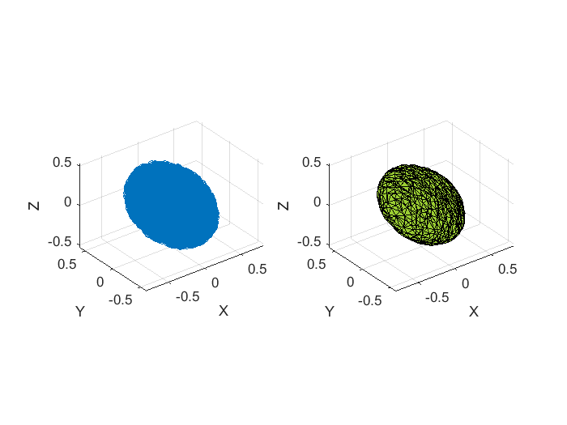
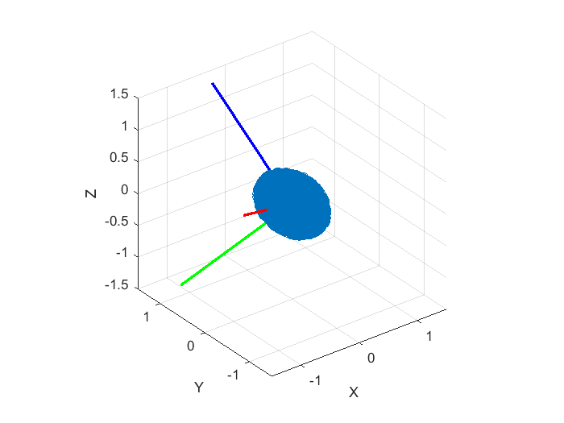

create an example to be used with our tutorial on PRINCIPAL moments of inertia
Contents
- Consider an ellipsoid
- Plot the Ellipsoid:
- cleanup
- Calculate an APPROXIMATION for the Inertia matrix
- clean up a bit
- Create a NEW cloud of points
- cleanup a bit
- calculate INERTIA matrix for this NEW cloud
- Determine the PRINCIPAL inertias and axes of the NEW cloud
- sort eigenvalues in ASCENDING order
- check ORTHONORMALITY
- CHECK RH co-ordinate frame - part 1
- CHECK RH co-ordinate frame - part 2
- PRINCIPAL INERTIA and axes:
- PLOT it
Consider an ellipsoid
REF: https://en.wikipedia.org/wiki/List_of_moments_of_inertia
ax = 1; % semiaxes length in X direction by = 0.5; % semiaxes length in Y direction cz = 0.25; % semiaxes length in Z direction vol = pi*(4/3)*ax*by*cz % volume of ellipsoid m = 1000; density = m/vol; Ip = (m/5)*[ (by^2 + cz^2), 0, 0; 0, (ax^2 + cz^2), 0; 0, 0, (ax^2 + by^2);]
vol =
0.5236
Ip =
62.5 0 0
0 212.5 0
0 0 250
Plot the Ellipsoid:
[x, y, z] = ellipsoid(0,0,0,ax,by,cz,30);
figure
surf(x, y, z)
axis equal
hold on
% DOUBLE unit vectors for plots
xu = [2;0;0];
yu = [0;2;0];
zu = [0;0;2];
plot3([0;xu(1)], [0;xu(2)], [0;xu(3)], '-r', 'LineWidth', 2);
plot3([0;yu(1)], [0;yu(2)], [0;yu(3)], '-b', 'LineWidth', 2);
plot3([0;zu(1)], [0;zu(2)], [0;zu(3)], '-g', 'LineWidth', 2);
axis('equal'); grid('on'); xlabel('X'); ylabel('Y'); zlabel('Z');
xlim([-1.5, 1.5]); ylim([-1.5, 1.5]); zlim([-1.5, 1.5]);
title('ORIGINAL ellipse')
 cleanup
clear x y z
Calculate an APPROXIMATION for the Inertia matrix
% generate a list of random data points rng(0); Nrand = 20000; x_list = -ax + (2*ax)*rand(Nrand,1); %r = a + (b-a).*rand(N,1) y_list = -by + (2*by)*rand(Nrand,1); z_list = -cz + (2*cz)*rand(Nrand,1); % only keep the points inside our ellipse tmp = (x_list.^2)/(ax^2) + (y_list.^2)/(by^2) + (z_list.^2)/(cz^2); ind = abs(tmp) <=1; x_list = x_list(ind); y_list = y_list(ind); z_list = z_list(ind); % create an INERTIA_FROM_CLOUD object OBJ_IFC = inertia_from_cloud_CLS(x_list, y_list, z_list); OBJ_IFC.Alpha = 0.2; % plot it OBJ_IFC.plot(); % calculate the approximations for the VOLUME, MASS and INERTIA matrix [V,M,I] = OBJ_IFC.calc_I_at_cm(density) % extract the actual CLOUD data points x_cloud_col = OBJ_IFC.x_col; y_cloud_col = OBJ_IFC.y_col; z_cloud_col = OBJ_IFC.z_col;
### ATTENTION: 10456 duplicte points were removed
V =
0.49087
M =
937.5
I =
55.904 0.37924 0.04089
0.37924 193.15 -0.011146
0.04089 -0.011146 227.03
 clean up a bit
clear x_list y_list z_list tmp ind Nrand
Create a NEW cloud of points
% Form a PASSIVE rotation matrix % vp = pRb * vb degs_yaw = 30; degs_pitch= 23; degs_roll = 45; apas_OBJ = bh_rot_passive_G2B_CLS({'D1Z','D2Y','D3X'}, ... [degs_yaw, degs_pitch, degs_roll], ... 'DEGREES'); pRb = apas_OBJ.get_R3R2R1(); % construct an ACTIVE Rotation matrix and rotate the points bRp = pRb.' ; new_xyz_mat = bRp * [ x_cloud_col' ; y_cloud_col' ; z_cloud_col' ;]; new_x_col = new_xyz_mat(1,:)' ; new_y_col = new_xyz_mat(2,:)' ; new_z_col = new_xyz_mat(3,:)' ; % save this data set save bh_saved_ellip_cloud new_x_col new_y_col new_z_col figure % plot the new CLOUD scatter3(new_x_col, new_y_col, new_z_col ); axis equal hold on % DOUBLE unit vectors for plots xu = bRp * [2;0;0]; yu = bRp * [0;2;0]; zu = bRp * [0;0;2]; plot3([0;xu(1)], [0;xu(2)], [0;xu(3)], '-r', 'LineWidth', 2); plot3([0;yu(1)], [0;yu(2)], [0;yu(3)], '-b', 'LineWidth', 2); plot3([0;zu(1)], [0;zu(2)], [0;zu(3)], '-g', 'LineWidth', 2); axis('equal'); grid('on'); xlabel('X'); ylabel('Y'); zlabel('Z'); xlim([-1.5, 1.5]); ylim([-1.5, 1.5]); zlim([-1.5, 1.5]); title('Our NEW cloud')
cleanup a bit
clear new_xyz_mat bRp pRb xx yy zz x_cloud_col y_cloud_col z_cloud_col
calculate INERTIA matrix for this NEW cloud
% create an INERTIA_FROM_CLOUD object OBJ_IFC = inertia_from_cloud_CLS( new_x_col, new_y_col, new_z_col); OBJ_IFC.Alpha = 0.2; % plot it OBJ_IFC.plot(); % calculate the approximations for the VOLUME, MASS and INERTIA matrix [VOL_b, MASS_b, Ib] = OBJ_IFC.calc_I_at_cm(density)
### ATTENTION: 10456 duplicte points were removed
VOL_b =
0.49087
MASS_b =
937.5
Ib =
117.81 -59.685 56.046
-59.685 171.95 14.243
56.046 14.243 186.33
 Determine the PRINCIPAL inertias and axes of the NEW cloud
% do eigen decomposition
[V, D] = eig(Ib)
V =
-0.79735 -0.11188 -0.59305
-0.45829 0.75163 0.47436
0.39268 0.65002 -0.65059
D =
55.903 0 0
0 193.15 0
0 0 227.03
sort eigenvalues in ASCENDING order
[~,ind] = sort( diag(D) ); D = D(:,ind) V = V(:,ind)
D =
55.903 0 0
0 193.15 0
0 0 227.03
V =
-0.79735 -0.11188 -0.59305
-0.45829 0.75163 0.47436
0.39268 0.65002 -0.65059
check ORTHONORMALITY
V * V'
ans =
1 2.2204e-16 -1.6653e-16
2.2204e-16 1 5.5511e-17
-1.6653e-16 5.5511e-17 1
CHECK RH co-ordinate frame - part 1
tmp_3 = cross(V(:,1), V(:,2) ); tmp_diff = tmp_3 - V(:,3); tmp_mag = norm(tmp_diff); if( tmp_mag < 1e-7 ) % everything is fine ... move along else warning('HEY!: I do not think you have a RH co-ordinate frame ?'); V(:,3) = tmp_3; end
CHECK RH co-ordinate frame - part 2
VT = V'; tmp_3 = cross(VT(:,1), VT(:,2) ); tmp_diff = tmp_3 - VT(:,3); tmp_mag = norm(tmp_diff); if( tmp_mag > 1e-7 ) error('HEY!: I do not think you have a RH co-ordinate frame ?'); end
PRINCIPAL INERTIA and axes:
Construct rotations from eigenvectors
pRb = V'; Ip_again = pRb * Ib * pRb.' bRp = pRb.' ;
Ip_again =
55.903 -1.7764e-15 1.0658e-14
-7.1054e-15 193.15 0
2.1316e-14 -1.4211e-14 227.03
PLOT it
figure % the NEW cloud scatter3(new_x_col, new_y_col, new_z_col ); axis equal hold on % DOUBLE unit vectors for plots b_xi_p = bRp * [2;0;0]; b_yi_p = bRp * [0;2;0]; b_zi_p = bRp * [0;0;2]; plot3([0;b_xi_p(1)], [0;b_xi_p(2)], [0;b_xi_p(3)], '-r', 'LineWidth', 2); hold('on'); plot3([0;b_yi_p(1)], [0;b_yi_p(2)], [0;b_yi_p(3)], '-b', 'LineWidth', 2); plot3([0;b_zi_p(1)], [0;b_zi_p(2)], [0;b_zi_p(3)], '-g', 'LineWidth', 2); axis('equal'); grid('on'); xlabel('X'); ylabel('Y'); zlabel('Z'); xlim([-1.5, 1.5]); ylim([-1.5, 1.5]); zlim([-1.5, 1.5]);